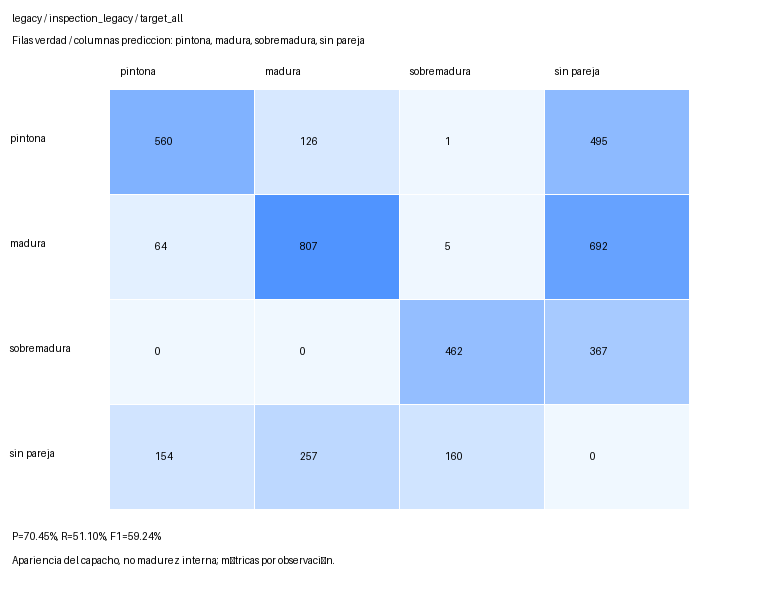
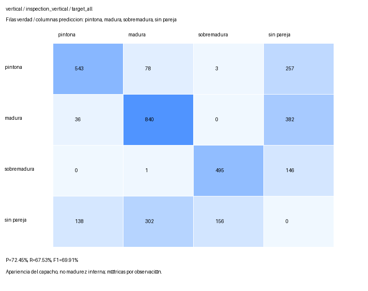
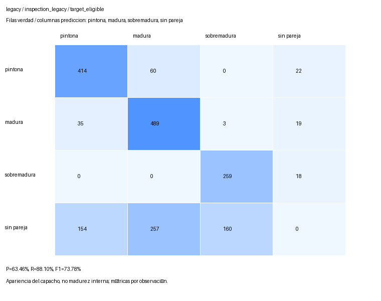
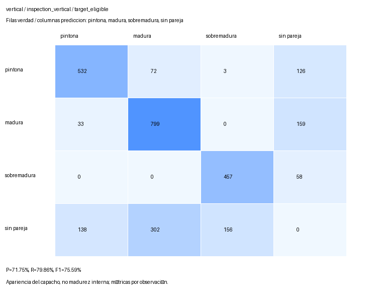
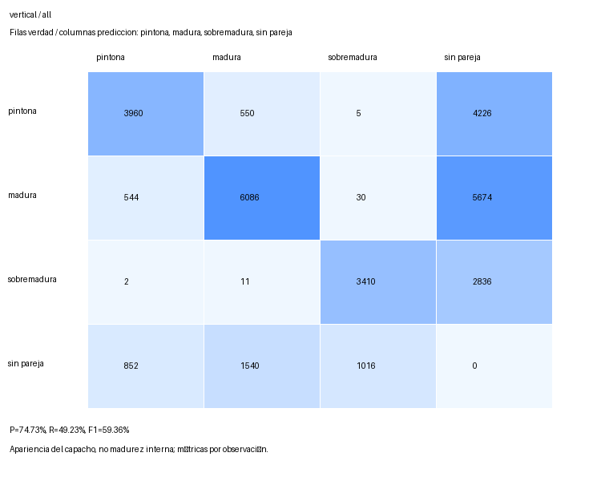
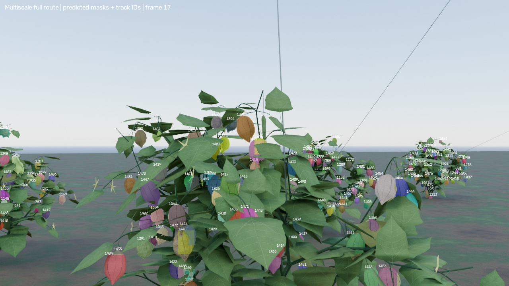
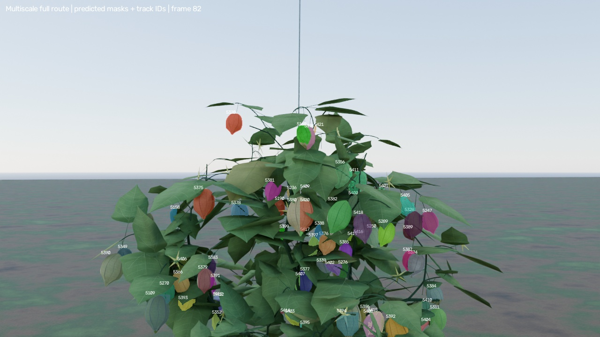
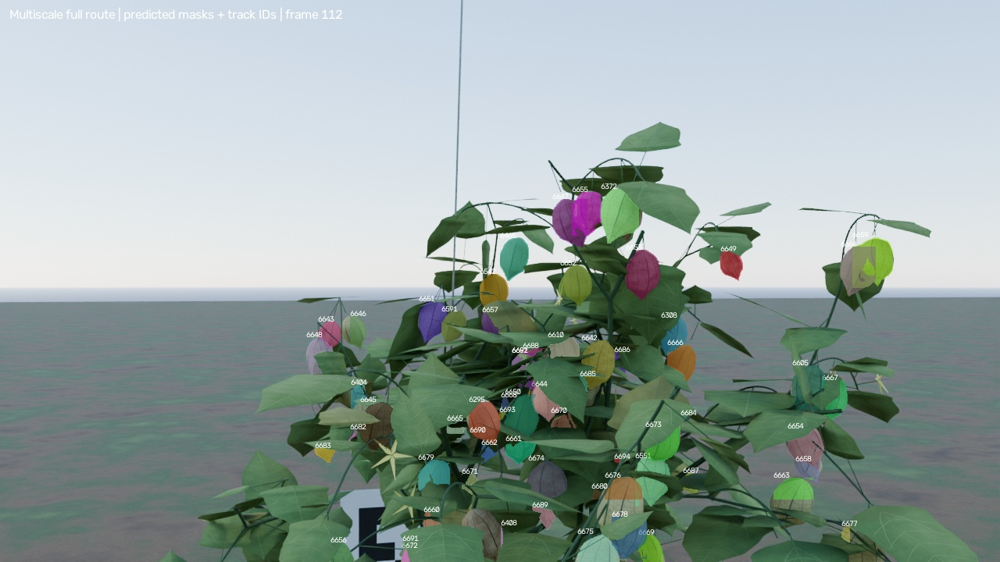

Ambas rutas tienen captura, inferencia, seguimiento y evaluación auditados. Órbita, videos finales con recuadro externo y localización 3D siguen pendientes. No se ha cerrado la campaña.
Las mismas plantas y el mismo modelo congelado; parches públicos 640/448 con entrada 960, confianza 0,25 e IoU de evaluación 0,5. No se repitió inferencia para esta entrega. El objetivo C06/C07 procede únicamente del evaluador privado; no es selección automática del estimador.
Legacy: 40 fotogramas / 10 s; vertical: 34 fotogramas / 8,5 s. Los encuadres y presupuestos difieren; no es una comparación con igual tiempo o las mismas observaciones.
| Ruta / alcance | P | Recall | F1 | Verdad incluida / total | Cambios ID / pares emparejados | Cobertura de pares |
|---|---|---|---|---|---|---|
| Legacy / Arbusto objetivo, todos | 70,45% | 51,10% | 59,24% | 3579 / 3579 (100,00%) | 836 / 1653 | 53,63% |
| Legacy / Arbusto objetivo, elegibles | 63,46% | 88,10% | 73,78% | 1319 / 3579 (36,85%) | 580 / 1054 | 94,11% |
| Barrido vertical / Arbusto objetivo, todos | 72,45% | 67,53% | 69,91% | 2781 / 2781 (100,00%) | 1242 / 1511 | 66,80% |
| Barrido vertical / Arbusto objetivo, elegibles | 71,75% | 79,86% | 75,59% | 2239 / 2781 (80,51%) | 1186 / 1447 | 79,81% |
El F1 de todos los tamaños aumenta de 59,24% a 69,91%. En elegibles pasa de 73,78% a 75,59%, pero recall cae de 88,10% a 79,86%. La fracción elegible sube de 36,85% a 80,51%. Esto describe las rutas observadas; no demuestra que la distancia sea la única causa.
Negativo conservado: los cambios de ID elegibles durante inspección pasan de 580/1054 (55,03%) a 1186/1447 (81,96%). Son tasas condicionadas a parejas espaciales observadas, no IDF1/HOTA/MOTA; su cobertura pasa de 94,11% a 79,81%. No se ajustó el tracker.
Elegible significa al menos 100 píxeles visibles y lado mínimo de caja 8 píxeles: criterio de ingeniería, no límite universal YOLO. Son observaciones por fotograma, no frutos únicos. El área visible no mide oclusión.




| Ruta / fase | Fotogramas | P objetivo | Recall | F1 todos | F1 elegibles |
|---|---|---|---|---|---|
| Legacy / Tránsito | 131 | 75,02% | 51,49% | 61,06% | 75,69% |
| Legacy / Toda la ruta | 178 | 73,70% | 51,98% | 60,97% | 75,34% |
| Barrido vertical / Tránsito | 126 | 75,77% | 55,93% | 64,36% | 75,21% |
| Barrido vertical / Toda la ruta | 167 | 74,66% | 59,08% | 65,97% | 75,46% |
Duración total: legacy 44,5 s; vertical 41,75 s. ArUco8 realmente decodificado: 80/178 y 30/167 vistas. C07 no tiene marcador propio; el único marcador común mide 0,20 m de lado codificado. No hay pose 3D ni error métrico evaluados en estas rutas.



Peor, mediana inferior y mejor F1 objetivo entre fotogramas de inspección; empates por índice ascendente. No son pares de cámara idénticos ni prueban causas del error. Los colores identifican tracks, no clases.


Se inspeccionaron los finales de los cuatro barridos (17, 33, 82 y 112). El follaje de la banda alta permanece visible; los encuadres cortan parte de la banda baja, esperable en un barrido cercano. Estas muestras no reproducen la salida casi completa del objetivo del antiguo fragmento vertical. No se cambió geometría ni se garantiza visibilidad de cada fruto.



Los FP del objetivo sin pareja se atribuyen aproximadamente por centroide dentro de su envolvente visible privada, después del matching global. No hay rematching favorable; vecinos emparejados se excluyen. Las clases son apariencia del capacho, no madurez interna. Sin promoción científica o productiva.
Recibo y hashes · Selección resuelta · Auditoría vertical · Entrega legacy anterior